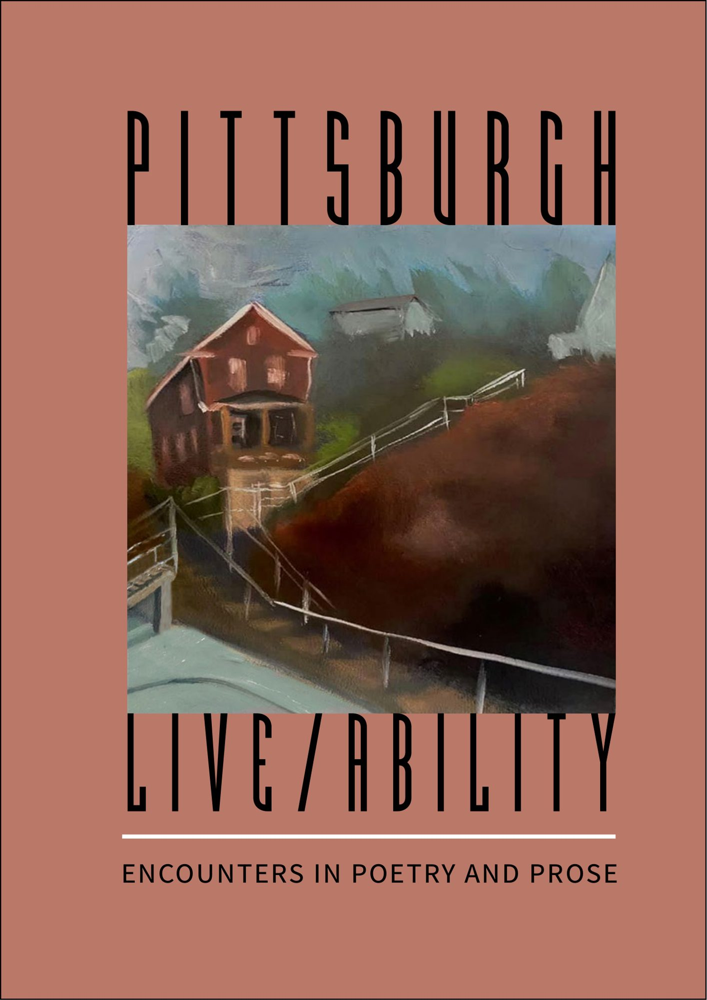

Explore Our Collection
Media & Archive
1,000+ videos, images, press coverage, publications, and documents spanning decades of freedom of creative expression.
1,000+ videos, images, press coverage, publications, and documents spanning decades of freedom of creative expression.
Sanctuary: The Writers of City of Asylum (2019)
What City of Asylum Has Meant to Me (Andrés Franco, Executive Director)
Why Do We Use Alphabets Across Our Projects?
Hospitality, Architecture to Programming
Celebrating 15 Years with City of Asylum (2019)
Pittsburgh Defends Freedom of Creative Expression, Annual Ceremony at City of Asylum

What is it like to live in Pittsburgh with a disability? The creative culmination of two years of work between 11 multilingual, multiply disabled, and multiply abled Pittsburgh writers and 11 Pittsburghers with disabilities.
Free online PDF (133 pages, also downloadable)
Also available on Spotify, Anchor, Amazon, and Apple.
 Exile Poems — Tuhin Das, tr. Arunava Sinha
Exile Poems — Tuhin Das, tr. Arunava Sinha Generation Zero: An Anthology of New Cuban Fiction — ed. Orlando Pardo
Generation Zero: An Anthology of New Cuban Fiction — ed. Orlando Pardo In Search of Fat — Bewketu Seyoum, tr. Chris Beckett
In Search of Fat — Bewketu Seyoum, tr. Chris Beckett Night Birds and Other Stories — Khet Mar, tr. Maung Maung Myint
Night Birds and Other Stories — Khet Mar, tr. Maung Maung Myint Nothing is Under Control — Oleksandr Fraze-Frazenko
Nothing is Under Control — Oleksandr Fraze-Frazenko Rituals of Restlessness — Yaghoub Yadali, tr. Sara Khalili
Rituals of Restlessness — Yaghoub Yadali, tr. Sara Khalili Signals of Being, or Verbum Caro Factum Est: A Play in Three Acts — Volodymyr Rafeyenko, tr. Mark Andryczyk
Signals of Being, or Verbum Caro Factum Est: A Play in Three Acts — Volodymyr Rafeyenko, tr. Mark Andryczyk Something Evergreen Called Life — Rania Mamoun, tr. Yasmine Seale
Something Evergreen Called Life — Rania Mamoun, tr. Yasmine Seale The Teeth of the Comb & Other Stories — Osama Alomar, tr. C.J. Collins
The Teeth of the Comb & Other Stories — Osama Alomar, tr. C.J. Collins The Thunder of Deep Thought — Huang Xiang, tr. Teresa Zimmerman-Liu
The Thunder of Deep Thought — Huang Xiang, tr. Teresa Zimmerman-Liu900+ videos featuring literary readings, concerts, and other performances at Alphabet City. Includes City of Asylum and partner programs.
283 videos of pre-Alphabet City concerts and readings, plus video interviews from Sampsonia Way Magazine.
City of Asylum's online magazine for literature, free speech, and social justice (2009–2021).